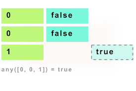

Python any.
O método Python any possibilita validar se existe alguma condição verdadeira.
Basicamente o método recebe uma lista de booleanos e se algum ítem da lista é verdadeiro, o método retorna verdadeiro.
Diferente do método all onde todos os itens precisam ser verdadeiros para que o retorno seja verdadeiro.
Essa capacidade ajuda a resolver validações com a condicional "or" sem a necessidade de uso de laço.
A capacidade já vem embarcada nas versões maiores que 2.7.18.
Exemplos.

Vamos exemplificar o método any para ficar mais fácil o entendimento:
Agora vamos fazer uma implementação de um teste sem utilizar o any,
utilizaremos a condicional or:
No exemplo acima, verificamos se o candidato a entrevista tem algum requisito
para ser agendado uma entrevista:
Para exemplificar, vamos alterar o código utilizando any:
Conclusão.
O Python possibilita utilizar diversas capacidades que podem melhorar a produtividade e até deixar o código menos acoplado e mais limpo.